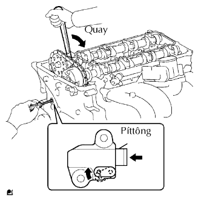

TRỤC CAM > THÁO |
| 1. NGẮT CÁP ÂM RA KHỎI ẮC QUY |
| 2. THÁO ĐAI DẪN ĐỘNG |
 |
Dùng một chi tiết dạng lục giác như chỉ ra với mũi tên trong hình vẽ để dịch chuyển puli căng đai xuống dưới để giảm độ căng đai dẫn động. Sau đó tháo dây đai dẫn động.
| 3. THÁO ỐNG NỐI NẠP KHÍ |
 |
Ngắt ống chân không.
Ngắt ống thông hơi số 2.
Ngắt giắc nối cảm biến MAF và các kẹp dây điện.
Nới lỏng kẹp ống và tháo 4 bu lông, bộ lọc gió và cụm ống nối nạp khí.
| 4. THÁO CUỘN ĐÁNH LỬA |
Tháo bu lông và cuộn đánh lửa.
| 5. THÁO NẮP ĐẬY NẮP QUY LÁT |
 |
Tháo dây điện ra khỏi 6 kẹp.
Tháo 19 bulông, 2 đai ốc, nắp đậy nắp quy lát và 2 gioăng.
| 6. THÁO DẪN HƯỚNG XÍCH CAM |
 |
Tháo 2 bulông, dẫn hướng xích cam và gioăng chữ O.
| 7. THÁO ĐĨA XÍCH PHỐI KHÍ TRỤC CAM |
Quay puli trục khuỷu và gióng thẳng rãnh của nó với dấu thời điểm đánh lửa O trên nắp xích cam.
Kiểm tra rằng các dấu phối khí của bánh răng trục cam và đĩa răng đã được gióng thẳng với các dấu phối khí của nắp bạc No.1, như được chỉ ra trên hình vẽ.
Đánh các dấu sơn lên xích cam và bánh răng phối khí trên trục cam.
Cố định trục cam bằng mỏ lết và sau đó nới lỏng bulông bắt đĩa xích.
Dùng một đầu lục giác 10 mm, tháo nút của nắp đậy xích cam.
Dùng một tô vít, tiếp cận tấm hãm bộ căng xích qua lỗ sửa chữa bộ căng xích. Đẩy tấm hãm lên trên để nhả khoá. Sau đó giữ tấm hãm ở tại vị trí như được chỉ ra trên hình vẽ.
|  |
Nhả khoá của tấm hãm, hãy quay nhẹ trục cam sang phải. Sau đó duy trì vị trí này.
Tháo tô vít ra khỏi lỗ sửa chữa bộ căng xích. Dịch chuyển tấm hãm đến vị trí như trên hình vẽ. Sau đó cắm chìa lục giác vào lỗ.
Tháo đĩa xích phối khí trục cam ra khỏi trục cam.
| 8. THÁO TRỤC CAM |
 |
Nới lỏng đều tay 21 bulông nắp bạc qua một vài lần theo thứ tự được chỉ ra như trong hình vẽ.
Tháo 9 nắp bạc, ống phân phối dầu, gioăng chữ O và trục cam.
Tháo trục cam trong khi giữ xích cam.
Buộc xích cam bằng một sợi dây như chỉ ra trên hình vẽ.
| 9. THÁO CÒ MỔ XUPÁP |
| 10. THÁO BỘ ĐIỀU CHỈNH KHE HỞ XUPÁP |
| 11. THÁO BÁNH RĂNG PHỐI KHÍ TRỤC CAM |
 |
Tháo bulông có gờ và bánh răng phối khí trục cam.
| 12. THÁO NẮP THÂN XUPÁP |